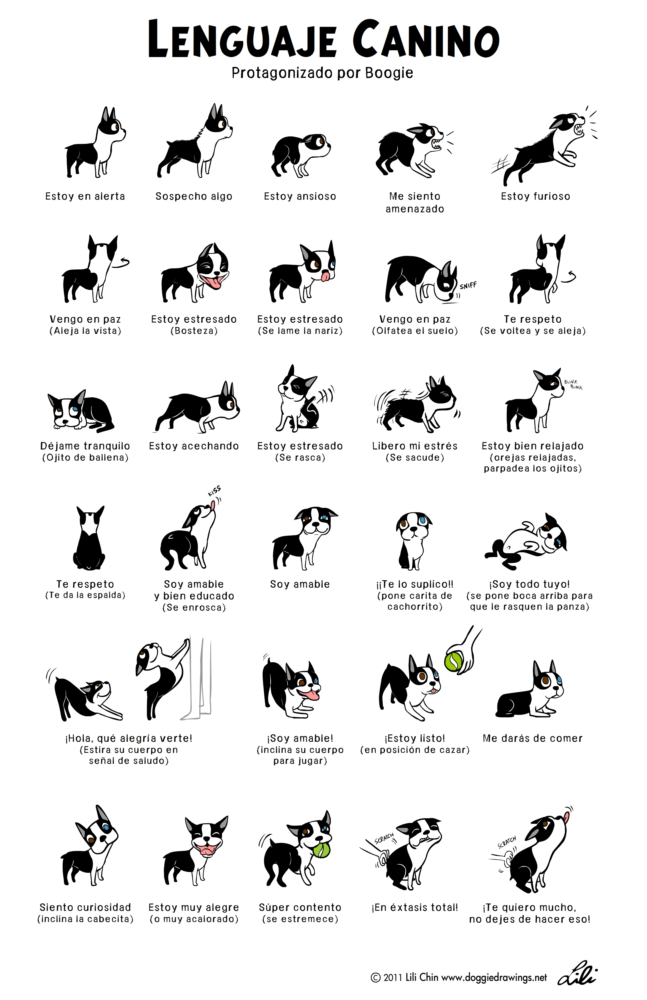

¿Sabes qué significan las señales que emite tu perro?
Interpretando la conversación silenciosa de los perros
A menudo pensamos que la comunicación con nuestros perros es unidireccional: nosotros hablamos y ellos obedecen (o no). Pero la realidad es que ellos están lanzando mensajes constantemente. El lenguaje canino es, en su mayoría, visual y preventivo. Los perros no quieren líos; por eso, han desarrollado un sistema de señales diseñado para calmar las aguas mucho antes de que la tensión suba.

Las señales de apaciguamiento: El código de cortesía
Cuando un perro se siente ligeramente incómodo o quiere demostrar que no es una amenaza, utiliza gestos rápidos que solemos pasar por alto. Estas señales no solo sirven para calmar al otro (ya sea un perro o un humano), sino también para autorregularse ellos mismos.
- El lamerse el hocico (Licking): No es hambre ni sed. Es un gesto fugaz donde la lengua sale y entra rápidamente. Es una de las primeras señales de que algo en el entorno les genera una pequeña incertidumbre.
- El bostezo "fuera de contexto": Si vuestro perro bosteza en el veterinario o mientras lo abrazáis para una foto, no tiene sueño. Está liberando tensión y pidiendo, educadamente, un poco de espacio o una bajada de intensidad.
- Apartar la mirada: En el mundo canino, el contacto visual directo y fijo es un desafío. Girar la cabeza o simplemente desviar los ojos es una herramienta social maravillosa para decir: "No busco problemas, vengo en son de paz".
La importancia de la intención: Curvas y pausas
El lenguaje corporal no solo está en la cara, sino en cómo el perro mueve todo su cuerpo en el espacio. La forma en que un perro se aproxima a algo dice mucho más que un ladrido.
- La aproximación en curva: Si observáis a dos perros con buenas habilidades sociales, veréis que casi nunca caminan rectos el uno hacia el otro. Hacen una pequeña curva. Caminar recto es invasivo; rodear es respetuoso.
- La "sacudida" tras la tensión: Ese momento en que el perro se sacude como si estuviera mojado después de una interacción o un momento tenso. No es que le pique algo; está "reiniciando" su sistema nervioso, soltando el estrés acumulado para volver a su estado de equilibrio.
- El olfateo de desplazamiento: Es ese "me pongo a leer el periódico" (oler el suelo) justo cuando alguien se acerca. Es una forma de ganar tiempo, de desviar la atención y de rebajar la presión de una interacción social que les resulta demasiado directa.
¿Por qué deberíamos observar más y corregir menos?
Entender estos matices cambia nuestra percepción del "mal comportamiento". Un perro que se queda clavado en el paseo no es necesariamente un perro terco; puede ser un perro analizando si el camino es seguro. Un perro que nos da la espalda no nos está ignorando; nos está comunicando que confía en nosotros o que necesita que bajemos nuestro nivel de energía.
Cuando aprendemos a reconocer estas señales, dejamos de ver reacciones aisladas y empezamos a ver una conversación. La clave no está en que el perro aprenda nuestro idioma, sino en que nosotros hagamos el esfuerzo de entender el suyo. Al final, el respeto nace de la comprensión, y no hay mejor regalo para un perro que sentirse, por fin, escuchado.